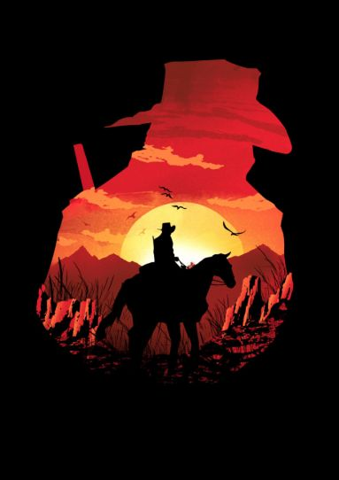
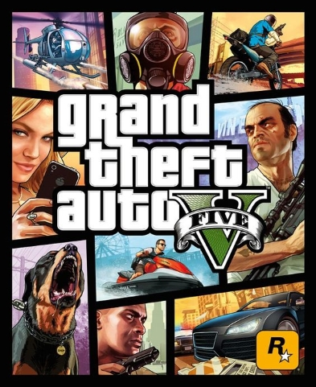
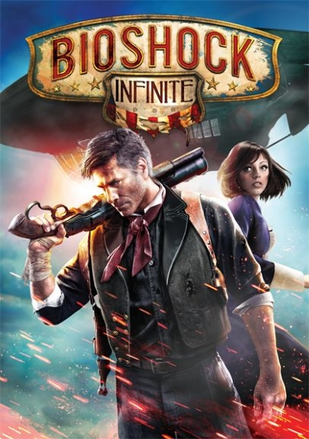
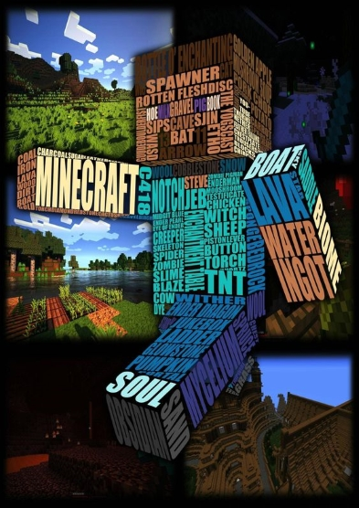
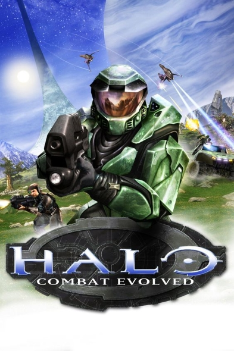
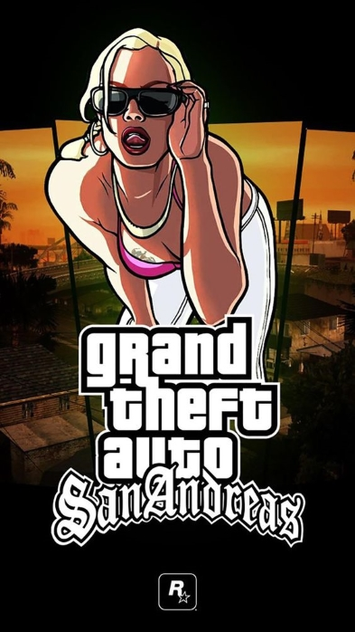

Os 10 Melhores jogos de todos os tempos

Preparar uma lista de melhores jogos de todos os tempos não é fácil. Com tantos títulos marcantes na história dos videogames, sempre tem um ou outro jogo histórico que fica de fora. Há anos os jogos de videogame nos envolvem, nos divertem e continuam evoluindo. Pensando nisso, resolvemos montar abaixo uma lista com os 10 melhores jogos de todos os tempos.
1 - Red Dead Redemption 2
Depois de oito anos esperando, eis que a Rockstar Games entregou a continuação (que na verdade é um prequel) do primeiro Red Dead Redemption, aclamado jogo de ação e aventura ambientado no faroeste. O mundo do segundo jogo é ainda mais responsivo e interativo do que o do primeiro, com eventos pontuais e marcantes e personagens carismáticos e emblemáticos. A experiência também é gigantesca e ainda há quem não conseguiu aproveitar tudo que Red Dead Redemption 2 tem a oferecer. É tanta coisa pra se fazer, pessoas com quem falar, ocorridos para vivenciar que parece interminável – e, em certo nível, insuperável.
2 - Grand Theft Auto V (PS3, Xbox 360)
 O novo episódio da controversa franquia da Rockstar chegou batendo recordes e ganhando prêmios por onde passa. São três personagens, uma história rica que envolve mundos bem diferentes e uma cidade aberta e livre, onde o jogador pode fazer, literalmente, o que quiser. Para muitos, o melhor jogo da saga e, com certeza, merecedor do título de Jogo do Ano.3 - BioShock Infinite (PS3, Xbox 360, PC)
 Outro game que emocionou muita gente, BioShock Infinite traz uma distopia que parece futurista, mas na verdade, se passa no início do século. A bordo de uma cidade flutuante e isolada do resto do mundo, o jogador descobrirá segredos, se envolverá com a história da belíssima Elizabeth e perceberá que, sem dúvida alguma, nada é o que parece.4 - Minecraft
 Em Minecraft a única coisa importante é usar a imaginação. No melhor estilo Lego o jogo consiste em criar o que você quiser com o material coletado no cenário. O jogo é online e em mundo aberto, então a interação com os outros jogadores aumenta ainda mais as possibilidades, fazendo de Minecraft um jogo basicamente infinito.5 - Halo: Combat Evolved
 Uma poderosa aliança de raças alienígenas chamada Covenant ("o Pacto") está dizimando o nascente império terrestre. Você e os sobreviventes de uma colônia atacada lutam desesperadamente para afastar a frota alienígena. Com seu povo isolado no antigo mundo-anel de Halo, você inicia uma guerra de guerrilha contra a Covenant. Lute pela humanidade contra a ameaça alienígena: entre na corrida contra o tempo para desvendar os incríveis mistérios de Halo.6 - Grand Theft Auto: San Andreas
 Embora já com GTA III e Vice City a saga tenha começado a decolar, San Andreas a enviou ao estrelato e a um pódio que dificilmente será roubado. A perigosa história pessoal de CJ nos convida a conhecer muitos personagens diversos e a forjar o protagonista da maneira que queremos. Você será grande e musculoso? Ou magro e fraquinho? Se tem uma única palavra para definir San Andreas, essa palavra é liberdade.7 - Star Wars: Battlefront II (2005)
 A franquia originada de Battlefield, Battlefront certamente nos trouxe um dos games mais populares de Star Wars. O primeiro dessa nova série foi um grande sucesso e não demorou muito para que, em 2005, recebesse sua continuação, Battlefront II. Expandindo os conceitos apresentados no jogo original, a sequência nos trouxe diversas novas adições, com um gameplay fluido e divertido que se sustenta até os dias de hoje, certamente o colocando acima do remake moderno, lançado em 2015. Dito isso, o game está longe de ser perfeito, com alguns problemas que podem torná-lo repetitivo em alguns pontos.
A franquia originada de Battlefield, Battlefront certamente nos trouxe um dos games mais populares de Star Wars. O primeiro dessa nova série foi um grande sucesso e não demorou muito para que, em 2005, recebesse sua continuação, Battlefront II. Expandindo os conceitos apresentados no jogo original, a sequência nos trouxe diversas novas adições, com um gameplay fluido e divertido que se sustenta até os dias de hoje, certamente o colocando acima do remake moderno, lançado em 2015. Dito isso, o game está longe de ser perfeito, com alguns problemas que podem torná-lo repetitivo em alguns pontos.